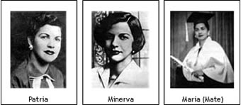
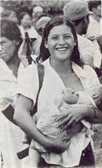
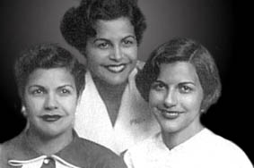

دیکتاتوری سیاه تروخیو در دومینیکن در آثار نویسندگان بسیاری از جمله گراهام گرین، مارکز و یوسا به تصویر در آمده است. "خولیا آلوارز" نیز در کتاب خود به نام "در زمانه پروانه ها" به زندگی اعضای یک خانواده در یکی از روستاهای دومینیکن می پردازد. این رمان بر اساس زندگی واقعی " خواهران میرابل" نوشته شده است .
4 خواهر عضو خانواده میرابل در دوران دیکتاتوری بر علیه حکومت فعالیت می کنند و خواستار حقوق انسانیشان برای زندگی در کشورشان هستند.

هر فصل داستان توسط یکی از خواهران روایت می شود. نها داستان های یکدیگر را کامل کرده و هر یک با لحن و ادبیات خاص خود به نقل اتفاقات می پردازد.
خواهران میرابل به ترتیب پاتریا، دده ، مینروا و ماریا ترسا نام دارند همه .آنها به استثنای دده برای ادامه تحصیل به یک مدرسه نیمه مذهبی در خارج از روستایشان می روند و در همانجاست که برای اولین بار مینروا از دوستانش حقایقی را درباره جنایات "تروخیو"- که او را "رئیس" خطاب می کردند - می شنود .این در حالیست که او تا قبل از این فکر می کرد رئیس "آدم خوبی است" و همه مردم نیز در خانه هایشان عکس او را کنارشمایل های مذهبی و به عنوان شخصی "مقدس" می گذاشتند.
سال ها بعد هنگامی که خواهران بزرگتر شدند و پاتریا خواهر بزرگ تر ازدواج کرد، مینروا که همواره آزادی خواه تر و مستقل تر از دیگران بود به گروهک های زیر زمینی فعال علیه رژیم پیوست و پس از او نیز تک تک خواهرانش با جنبش همراه شدند، هرچند که دده به علت مخالفت های شوهرش و ترس خود هرگز همکاری پر رنگی با جنبش نکرد.
در طول داستان به مرور با فضای خفقان آور دوران دیکتاتوری تروخیو آشنا می شویم ، دورانی که مردم به تدریج به وضعیت خود آگاه می شوند، فضایی که در آن ماموران و جاسوسان حکومتی همه جا مخفی شده اند و شک و بد بینی در دل ها رسوخ کرده است:
خایمیتو ، لیو را آدم دردسر آفرینی خطاب کرد، متهم اش کرد که توطئه چینی می کند و سپس به یکی از سفارت خانه ها می گریزد و پناهندگی می گیرد و رفقایش را پشت سر رها می کند تا در زندان بپوسند."تو سر همه ما را بر باد میدهی"
"اگر کشورم را ترک میکنم فقط برای ادامه مبارزه است.نباید بگذاریم بوزینه همه ما را بکشد."
سپس سکوتی حاکم شد که همیشه به دنبال اشاره تمسخر آمیز به رژیم جلوی عموم پیش می آمد.هیچ کس مطمئن نبود چه کسی در یک گروه ممکن است به پلیس گزارش بدهد. می گفتند در هر خانوار بزرگی مستخدمی هست که از دو جا حقوق می گیرد.
همه خواهران به تدریج ازدواج می کنند و پس از مدتی خود و همسرانشان از اعضای اصلی سازمان دهی کننده حرکات علیه رزیم دیکتاتور می شوند ، به تدریج که مردم می شناسندشان لقب "پروانه ها" را به آنها می دهند.
اگر چه تم اصلی داستان مبارزات دختران خانواده است ، اما از آنجایی که روایت ها همواره اول شخص است ( به جز چند مورد که مربوط به " دده " تنها خواهر باقی مانده است) داستان هرگز از زندگی خصوصی راویانش جدا نشده و به زیبایی لحظاتی از گفتگو های درونیشان را به تلاش ها و مبارزاتشان می بافد و کتاب به آمیزه ای ازخواسته ها و مسئولیت های سیاسی و اجتماعی این زنان و دغدغه های خصوصیشان تبدیل می شود.
و بعد نوری که از اتاق خواب بچه ها می تابید خاموش شد.هنگامی که کمی دیگر در تاریکی ایستادیم و خودمان را آرام می کردیم،این احساس خوف انگیز را داشتم که مرده ایم و با اشتیاق به خانه یی نگاه می کنیم که در آن فرزندانمان بدون ما بزرگ می شوند.
بخش جالبی از داستان دست نوشته های ماریا ترسا در زندان رژیم است، او ضمن برقراری ارتباط با هم بندانش و در حالیکه تجربیات تلخی را پشت سر می گذارد امید به آزادی را از دست نمی دهد و تصویر ملموس و آشنایی از موقعیت زنان سیاسی در زندان را ارائه می کند:
بقیه ما زنان سیاسی را در سلولی انداختند که بزرگ تر از اتاق پذیرلیی و نشیمن مامان روی هم نبود.اما شوک واقعی وقتی بود که فهمیدیم شانزده هم سلولی دیگرمان چه کسانی اند"غیر سیاسی ها"-دزد، روسپی، قاتل- و درست همین ها بودند که به ما اعتماد کردند.
پس از اینکه ترس ات ریخت،سخت ترین چیز در اینجا نبود زیبایی است.نه آهنگی که بشود گوش داد، نه رایحه دلپذیر و نه حتی چیزی زیبا که به آن نگاه کرد.آن آینه کوچکی که دده برایم فرستاده در مخفیگاهمان است تا هر که خواست خودش را ببیند.چندین بار آن را بیرون آورده ام ، نه به دلیل خود پسندی، بلکه می خواهم مطمئن شوم که هنوز اینجا هستم و ناپدید نشده ام.
سپس ما سیاسی ها در گوشه خودمان جمع شدیم و سه قانون مهم را تکرار کردیم:
هرگز حرفشان را باور نکن
هرگز از آن ها نترس
هرگز چیزی از آن ها نخواه

داستان به آرامی از خلال خاطرات آن ها سپری می شود و ما داستان کشته شدن خواهران را از زبان شاهدان این جنایت می شنویم.
به نظر می رسد راننده کامیون همین که کلمه کالیه را شنید در را که باز کرده بود بست.به فرمان یکی از مردها راهش را ادامه داد و رفت.دل ام می خواست از او بپرسم "چرا نایستادید و کمکشان نکردید؟" اما البته نپرسیدم. با این همه او این سوال را در چشمانم خواند و سرش را خم کرد.
آخرین فصل کتاب را دده تعریف می کند.او به عنوان تنها بازمانده ، خاطراتش را از رنج این سال ها بیان می کند او از سرنوشت خواهر شوهرانش می گوید که یکی از آنها در کوهستان کشته شد و بقه نیز سالها بعد زندگی خود را در مسیری متفاوت از سال های جنبش دنبال کردند.حالا او خود نیز از همسرش خایمیتو جدا شده است :
این آخرین سخنرانی اش از نقطه یی مخفی در کوهستان است.با صدایی رگه رگه و رسمی سخن می گفت : "هموطنان دومینیکنی!نباید بگذاریم یک دیکتاتور دیگر بر ما حکومت کند! "بعد چیزی که در پارازیت گم شد "به پا خیزید! به خیابان ها بریزید! به من و رفقایم در کوهستان بپیوندید!هنگامی که در راه میهنت بمیری بیهوده نمی میری!"
اما کسی به آن ها نپیوست.پس از چهل روز بمباران،عفو عمومی را که با رادیو اعلام شده بود را پذیرفتند.با دست هایی بالا برده شده از کوهستان پایین آمدند و زنرال ها همگی را به ضرب گلوله از پای در آوردند،همگی را.
در خاطرات و کلام دده تلخی و رنج کسی وجود دارد که زنده مانده تا زوال امید ها و محو شدن آرمان ها زیر غبار زمان را ببیند، او با بدبینی همیشگیش یاد آوری می کند که امید ها و اهدافی که آنها جوانیشان رابرایش بر باد داده اند اکنون فراموش شده و بی معنی شده است و از هم وطنان خود شکایت می کند :
اگر می دانستم آنجا است ، نمی رفتم.منظورم رئیس جمهور فعلیمان است که زمانی که دختر ها را کشتند رئیس جمهور دست نشانده بود.آشنایان می کوشند قانعم کنند."فراموش کن دده، او الآن پیرمردی کور است."
پرخاش کنان می گویم:"وقتی هم می توانست ببیند کور بود."
مردم چیز هایی می پرسند،قابل درک است. اما با این همه انگشتشان را آن جا که هنوز درد می کند نمی گذارند.
همان مردمی که زمانی خفه خون گرفته بودند، که یک جیغ کوچک از هر کس می توانست به آوازی دسته جمعی تبدیل شود و دنیا نمی توانست نادیده اش بگیرد.مردمی که روزگاری دوست شیطان بودند.هر کس با لو دادن دیگری خودش را در امان قرار می داد.
پرش ها در داستان از اتفاقات واقعی به ذهنیات راوی به شکلی ماهرانه و سیال روی میدهد مثلا هنگامی که مینروا پدرش را تعقیب می کند و متوجه خانواده مخفی پدرش - یک زن فقیر و چهار دختربچه دیگر- می شود
هر جا را که نگاه می کردم،آن چهار دختر ژنده پوش را با چشمان پدرم و چشمان گود رفته خودم می دیدم که فریاد می زدند:" بده،بده" اما وقتی می پرسیدم" چی می خواهید؟" می ایستادند،سکوت می کردند،دهان شان باز می ماند و نمی دانستند از کجا شروع کنند.
اگر از من نیز همان سوال را می پرسیدند،من هم زل می زدم و سکوت می کردم.دیگر نمی دانستم چه می خواهم.
داستان ، حکایت ایستادگی و ایمان دختران به مبارزه و اهدافشان است. ایمانی که هر از گاهی به واسطه ترس از دست دادن آرامش زندگی، فرزند و همسریا مرگ سست می شود. اما دوباره بیدار می شود و آن ها را امیدوار می سازد ترس و تردید به طرزی واقعی و توجیه پذیر در خاطرات دختران خواهران دیده می شود اما.آن ها در مسیر خود هرگز به آرمان هایشان پشت نمی کنند و در شرایط سخت دیکتاتوری و علی رغم همه تهدید ها برای بهبود وضعشان تلاش می کنند.
.
چنان نگاهی به مانوئل د مویا می کنم که انگار به دیوار سنجاقش کرده ام."حاضرم خود را از پنجره بیرون بیاندازم تا مجبور نشوم کاری بر خلاف شرافتم بکنم."
چون با رئیس نمی خوابم بیش از سه هفته طول می کشد تا بپذیرد ما را ببیند.در عمل من و مامان توقیف هستیم.
ما هم می توانستیم با میریام و دولسه یک هفته پیش بیرون باشیم.اما نه، ما خواهران میرابال باید سرمشق خوبی باشیم.بخشش خواستن به این معنا است که فکر کنیم کاری کرده ایم که بابت آن باید بخشوده بشویم.علاوه بر این نمی توانیم آزاد بشویم مگر اینکه به همه این امکان داده شود.

این کتاب در سال 2004 در برنامه ای تحت عنوان " یک کتاب یک شیکاگو" به عنوان کتاب برتر سال برگزیده شد و از این کتاب یک فیلم نیز ساخته شد که متاسفانه فیلم داستان مبارزه را به حماسه ای صرفا رمانتیک تقلیل داده است.
نویسنده کتاب خولیا آلوارز شاعر و نویسنده دومینیکن تبار، در سال 1950 از خانواده یی سیاسی در شهر نیویورک به دنیا آمده است.وی در سال 1991 نخستین رمان خود را با نام " چگونه دختران گارسیا لهجه خود را از دست دادند" و پس از آن رمان های "در زمانه پروانه ها" (1994) ، "یو!" (1997) ، " به نام سالومه" (2000) و "نجات جهان"(2006) و مجموعه اشعار " آن سوی دیگر" (1995) ، "بازگشت به خانه" (1996) ، " زنی که برای خود نگه داشتم" (2004) را منتشر کرد.
کتاب "در زمانه پروانه ها" با ترجمه حسن مرتضوی و قیمت 5200 تومان توسط نشر دیگر منتشر شده است.